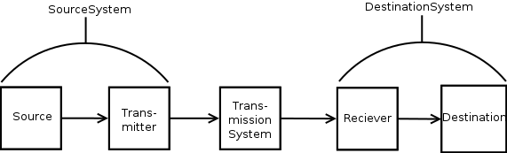
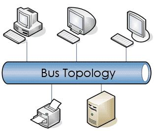
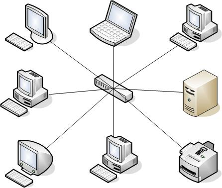
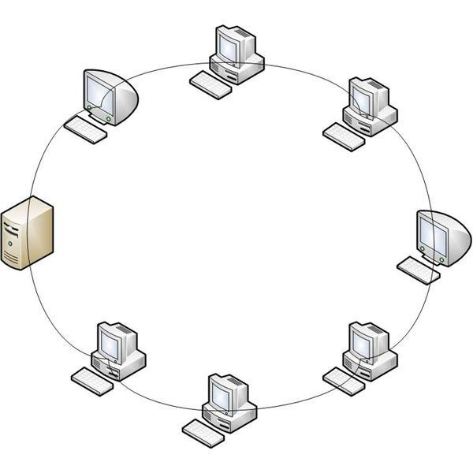
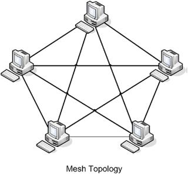
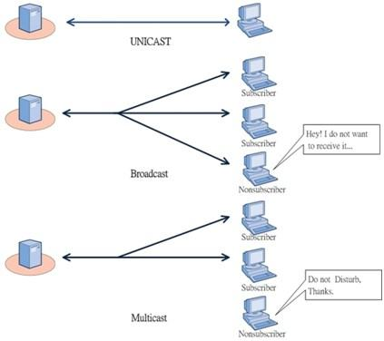

A Network is a collection of computers or hardware devices that are connected either physically or logically to allow for exchange of information
The Communication Model displays a very high-level analysis of any system with the parts defining as follows:

A Local Area Network (LAN) is a computer network covering a small geographic area, like a home, office, or a small group of buildings.
Characteristics of LAN:
A Wide Area Network (WAN) is a network covering large geographic areas, utilizing communications circuits to connect the intermediate nodes. Connects across distances of cities, states and countires.
Chracteristics of WAN:
A Metropolitan Area Network (MAN) is a computer network larger then a local area network, covering an area of a few city blocks to the area of an entire city, possibly also including the surrounding areas.
Characteristics of MAN:
A Bus Topology uses a common backbone to connect all devices to a single cable. The backbone functions as a shared communication medium that devices attach or tap into with an interface connector.
Advantages
Disadvantages

A Star Topology uses a centeral hub through which all components are connected. The centeral hob is the host computer and at the end of each connection is a terminal. Nodes communicate across the network by passing data through the hub
This is commonly seen for Home Router Setups
Advantages
Disadvantrages

A Ring Topology has all devices connected to one another in a closed loop, so each device is connected to two other devices in a ring.
Advantages
Disadvantages

A Mesh Topology has all devices connected to eachother (as they are in distance or wired) creating redundant paths between all devices. In a well connnected topology, every node would have a connection to every other node.
A fully connected mesh network therfore has
Advantages
Disadvantages

A Hybrid Topology Combines two or more different topologies.
Advantages
Disadvantages
An Internetwork is the connection of two or more distinct computer networks or network segments via a common routing technology. Any interconnection amoung or between public, private, commeercial, industrial or governmental networks may also be defined as an internetwork.
An Intranet is a set of networks using the Internet Protocol and IP-based tools (web browsers, file transfer) under the control of a single administrative entity.
This is generally the internal network of an organization (very common in the government)
An Extranet is a network or internetwork that is limited in scope to a single organization or entity but ALSO has limited connection to other externalized networks (trusted organizations or entities).
The Internet Is a compilation of networks across a global scale, connecting all networks accepting public communication. (Web services, websites, peer-to-peer clients).
Examples
The Internt is created by the Interconnection of Networks belonging to Internet Service Providers (ISPs). ISP networks connect eachother to provide access across the world.
All end systems are connected by a network of Communication Links (physical media/cables) and Packet Switches (circuit or digital packet routing)
The Internet can be described in Two Perspectives: Nuts-and-Bolts and Service Description
The Nuts-and-Bolts description defines the internet in terms of basic hardware and software components. These can be diagrammed for easy view of regional networks (however at a low level would be significantly too large to diagram easily)
The Services description defines the internet as an infustructure that provides services to applications. For instance we might overview services such as:
Existing/Currently Structuresd Services
New/Advancing Services
In instance, these Distributed Applications run on end nodes exchanging data to other end nodes. These end nodes are attached to the Internet provide an Application Programming Interface (API) that specifies how a software on one node asks the internet infastructure to deliver data to another end node.
An Internet API is a set of rules that software much follow so that it might reach required destinations.
There are Two Types of servicesto distributed applications:
In general, there are Three Types of transmission technologies that are in widespread usage currently:
